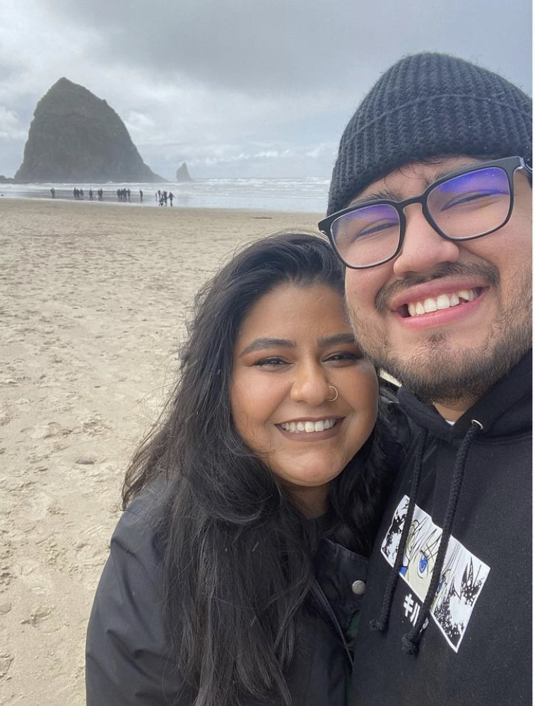

About Me:
My name is Jonathan, I was born in San Salvador, El Salvador. At 4 years old, my family and I moved to Seattle, WA.
Where I have spent the rest of my life in. I grew up playing baseball and cheering on the Mariners. I don't play anymore, but my love for baseball still runs deep, and I'm still a huge Mariners fan hoping for one day to have a world series win. I also enjoy spending time with my family, my partner and my dog!

Hobbies and Interests:
A big hobby of mine includes gaming, my favorite game at the moment is Apex Legends. Along with gaming, I also enjoy listening to music, some of my favorite artists include:
- J. Cole
- Kendrick Lamar
- Mac Miller
- Drake
- Travis Scott
Baylee
Background:
I graduated from the University of Washington with a BA in American Ethnic Studies. Since graduating college I have worked in many roles all within education. Working with the YMCA, Boys & Girls Club and now Treehouse have been great experiences.
Since the beginning of COVID I have been very interested in learning new skills, which includes coding and computers. My main goal now is to learn as much as possible. I hope to one day earn a tech job working either in the sports, music or gaming industry.
Projects:
- Goodbye
- In this project, I used HTML and made a list on how to say goodbye in different languages.
- my-first-webpage
- This project focued on myself, I was able to add some of my favorite things and places using HTML and CSS. In this project, I learned how to connect CSS to my HTML. As well as how to add images and links to the main page.
- cupcake
- In this project, we created a website for a bakery shop of our choice using HTML and CSS. Here I learned how to create boxes and borders and how to input images, headers and paragraphs within them.
- private-island-resort
- In this project we created a site for our own private resort using HTML and CSS. Here I practiced my headers and how to incorporate multiple links.
- animalshelter
- In this project we made a page for dogs that were up for adoption. This lesson used HTML and CSS, and focused on how to use divs and spans.
- section-in-review
- This project used HTML and CSS along with the introducton to bootstrap. We focused on using bootstrap and it was a great assigment to do as a way to look back at all that we have learned so far.